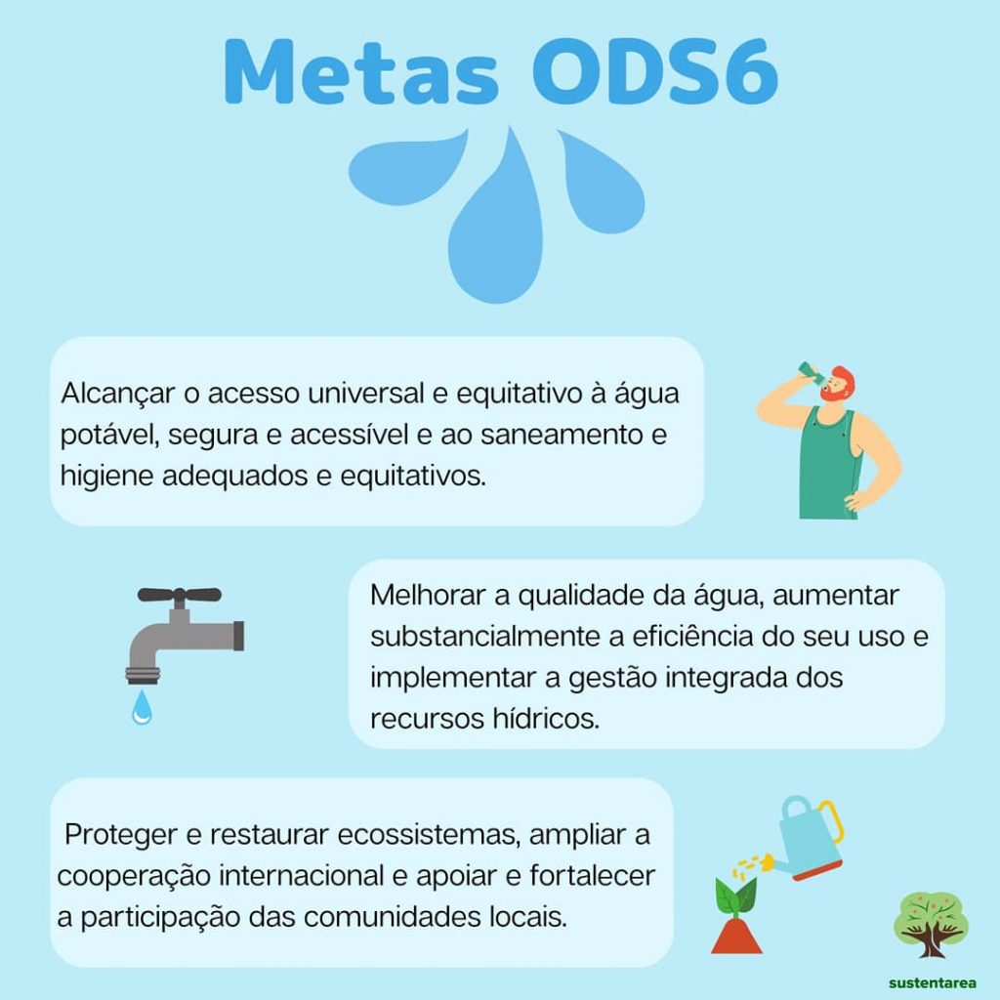

Importância: ODS 6 – Água potável e saneamento
O ODS 6 tem uma importância crucial no cenário global. A água, além de ser essencial para a sobrevivência, é um recurso finito que necessita de gestão adequada para garantir seu uso sustentável.
O saneamento básico é fundamental para prevenir doenças e garantir uma vida saudável para a população. Investir em saneamento é também uma forma de garantir dignidade e direitos humanos, já que muitas comunidades ainda sofrem com a falta deste serviço básico.
Além disso, a gestão correta da água e do saneamento contribui para a prevenção de desastres naturais, como inundações e secas, que têm impactos devastadores para a população e a economia.